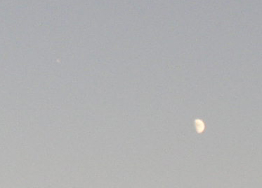
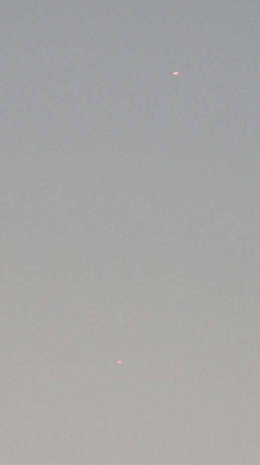
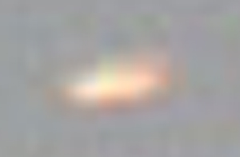
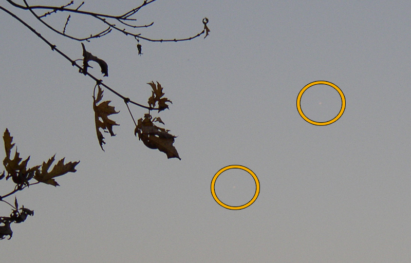
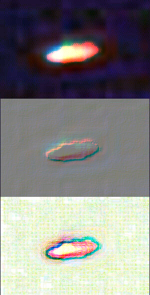

SUMMARY:
While walking my dog at Pioneer Park during daylight hours, I spottedan object in the sky that was, from my perspective, near the moon. Theobject was first considered a reflection of sunlight from an airplane asother high-flying planes reflecting sunlight had been visible moments earlier.However, the color of this object was pure white, unlike the gold-coloredreflections seen on planes around that same time due to the color of thesetting sun. Within moments, a second and identical object became apparent.Both were traveling with a slow path from east to north, first observednear the moon at an estimated 40-degrees above the horizon at 5:26 p.m.E.D.T. The objects clearly traveled on course together and at thesame general speed, heading to the north and directly over Downtown, Cincinnati.The two objects became fainter as they moved to the north and eventuallydisappeared in the sky haze around 5:28 p.m..
During this two minute duration, sixteen photographs were made usingan Olympus D-550 Zoom digital camera (3.0 megapixel) and the images storedon a 128 megabyte memory card.
The first photo was made without using the camera zoom, showing thefirst visible object near the moon. (Faint white object seen to the leftof the moon at the 10 o'clock position).

The remaining photos were made using the zoom set at maximum, and thesecond object was not noticed until after the fifth photo was taken, Itwas, however, visibly apparent and photographed on the fourth photo.

When I realized two identical objects were traveling together I stoppedtaking pictures momentarily, trying to focus my eyes on the objects toascertain some type of aircraft identification. I could not visually obtainany make on the objects and took note that the light source of each objectdid not seem reflective, as I had been seeing on other airplanes, as theywere each 'white' in color and of the same intensity.
IMAGE MAGNIFIED USING ADOBE PHOTOSHOP  |
Several images were taken of the two objects as they moved off to thenorth, over Downtown Cincinnati. Foreground images of nearby trees areprovided in the shot for frame of reference, although the autofocus mechanismof the Olympus camera tightened the focus on the trees, leaving the twoaerial objects 'soft' on focus.

I could not identify them as airplanes nor could any preliminary analysisof the 16-digital photos using Adobe Photoshop 6.0 reveal any additionalfeatures, such as wings or a tail section, using the magnification tool.
These are the first objects I have photographed that I cannot give immediateaccount for. I cannot rule out that they are two military or other jetaircraft flying together, but the reflective appearance were distinctlydifferent than other airplanes in the vicinity (aircraft can be seen atthat time and usually took on a 'reddish' hue due to the setting sun).No contrails were present and no sound could be heard. Traffic on nearbyHighway 17 would drown out any possible sound, however.
A word on "Reflection Time"
The "reflection time" of a plane reflecting sunlight is dependent uponmany variables, such as the position of the sun, the situation and bankingconditions of the plane, and the convenient location of the ground observer.In the case of these 2-objects seen near Cincinnati, it should be notedthat the illumination of these two objects were nearly identical and theirbrightness was consistent throughout their 2-minute sighting time and pathfrom east to north. In most cases, a reflective glare will recede afteran aircraft performs a banking maneuver and solid aircraft structure canbe seen. This was not the case with the 2-objects photographed near Cincinnation November 2, 2003.
ADDITIONAL COMMENT
On Wednesday, October 29, a married couple reported a UFO sighting nearHarrison Avenue in Cincinnati, Ohio, described as a bluish-white lightthat held a fixed position over Western Hills, also around 5:30 p.m. Thatreport is enclosed below.
Filed,
November 2, 2003
KENNY YOUNG

Indiana researcher Lynn Taylor
offers the following comments:
Obviously, the objects were east of your vantage point, in orderto be in the frame with the Moon. Also apparent is the red component ofthe objects, which is likely and primarily the result of reflected long-wavelight rays from the setting western sun.
Most importantly, if you view the attached image, you can clearlysee the ovoid shape of the object, after much of the glare has been strippedaway. I have also included embossed and edge-detected images for your study.As you mentioned in your report, there are no signs of wings, or any otherfeatures consistent with a conventional aircraft.
The fact that the objects seemed to be traveling at a reduced airspeed, would not rule out a non-conventional craft, or UFO, if you will.
I agree with your statement that any reflected sunlight is normallymomentary and variable in nature from the vantage point of the viewer.The appearance of the objects as you reported them would be more consistentwith self-illumination, caused by ionized atmospheric gases immediatelysurrounding the craft. At night, these emanations can appear in a rangeof intensities and colors, from deep red, to blue-white. Most "nocturnallights" are reported as reddish-orange in color.
IMAGES courtesy of Lynn Taylor
"RAW PHOTOs" AVAILABLE ONLINE
"Raw photos" of the 2-objects over Cincinnati on Nov. 2, 2003 that areun-edited and unprocessed can be found at the following locations (arrangedin sequence below). The last photo is marked, it is a 'frame of reference'shot showing the moon and marked with an arrow that is the E to N pathtaken by the objects.
Shots 1 - 3 contain the moon (3rd image is blurred), shots 4- 10 are 'open sky shots' showing the two objects, shots 11 through16 contain foreground
landscape for frame of reference. Shot 17 is general shot ofmoon in sky, where objects were first seen, for reference.
Caution, these are big files and may take a few minutes to load forthose with slower connections:
https://kenny.anomalyresponse.com/PIONEERBIG01.jpg
https://kenny.anomalyresponse.com/PIONEERBIG02.jpg
https://kenny.anomalyresponse.com/PIONEERBIG03.jpg
https://kenny.anomalyresponse.com/PIONEERBIG04.jpg
https://kenny.anomalyresponse.com/PIONEERBIG05.jpg
https://kenny.anomalyresponse.com/PIONEERBIG06.jpg
https://kenny.anomalyresponse.com/PIONEERBIG07.jpg
https://kenny.anomalyresponse.com/PIONEERBIG08.jpg
https://kenny.anomalyresponse.com/PIONEERBIG09.jpg
https://kenny.anomalyresponse.com/PIONEERBIG10.jpg
https://kenny.anomalyresponse.com/PIONEERBIG11.jpg
https://kenny.anomalyresponse.com/PIONEERBIG12.jpg
https://kenny.anomalyresponse.com/PIONEERBIG13.jpg
https://kenny.anomalyresponse.com/PIONEERBIG14.jpg
https://kenny.anomalyresponse.com/PIONEERBIG15.jpg
https://kenny.anomalyresponse.com/PIONEERBIG16.jpg
https://kenny.anomalyresponse.com/PIONEERBIG17.jpg
NOTE: You may need to use "BACK" on your browswer toreturn here from each page
SUBJECT: UFO SIGHTING
LOCATION: Harrison Avenue, Cincinnati, Ohio (Hamilton County)
DATE: Wednesday, October 29, 2003 - 5:30 p.m.
SUMMARY
A married couple, both in their twenties, called the Cincinnati UFOHotline (513-588-4548) to report a UFO sighting this evening. Amy, whois an administrative assistant that works downtown, left the message andwithin minutes she was contacted at the number she provided. Both talkedabout the sighting.
Amy said that a huge, intense lighted object was seen over western Cincinnatiearlier this afternoon and was curious if there were any other reports.
She said that her husband Jason, who is self-employed, was driving thecar west west on Harrison Avenue in Cincinnati, Ohio (Hamilton County)around 5:30 p.m. when they spotted the brilliant stationary object in thewest.
The motorists were approaching Boudinot Avenue when they noticed thesuspected UFO. They agreed this object was brilliant, even describing itas 'vibrant as the sun.' They described the object as bluish-white andestimated to hold a fixed position over the specific areas of Westwoodor Western Hills.
"It was circular," Amy said, "and we determined it was definitely nota plane because the intensity of the light was 30 to 50-times the sizeof any normal airplane light."
The two witnesses are positive the object was not a blimp, saying itwas perfectly round and of a different shape than a blimp. They were alsocertain the object could not have been an airplane, adding that they couldsee other airplanes in the sky and make visual comparisons. Further, theydo not think the light was caused by sunlight reflecting off of a plane,saying first that it was cloudy and also that the mass of the object wastoo large to have been a sunlight reflection from the fuselage of a plane.
She said the stationary object to the west of their position was toofar off to hear any sound. For several minutes they lost sight of the objectwhile driving further down the road as buildings blocked their view. Butfinally, Amy said, they caught sight of the object again, at which pointthe light "sucked into itself" and disappeared.
Weather at the time was cloudy, temperatures in the mid-50s.
Filed,
October 29, 2003
KENNY YOUNG
--
UFO Research
https://home.fuse.net/ufo
{kind=link}
{kind=link}
{kind=link}
{kind=link}
{kind=link}
{kind=link}
{kind=link}
{kind=link}
{kind=link}
{kind=link}
{kind=link}
{kind=link}
{kind=link}
{kind=link}
{kind=link}
{kind=link}
{kind=link}